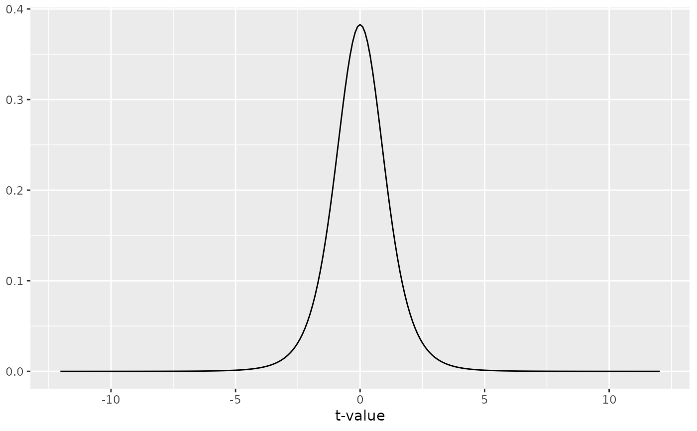
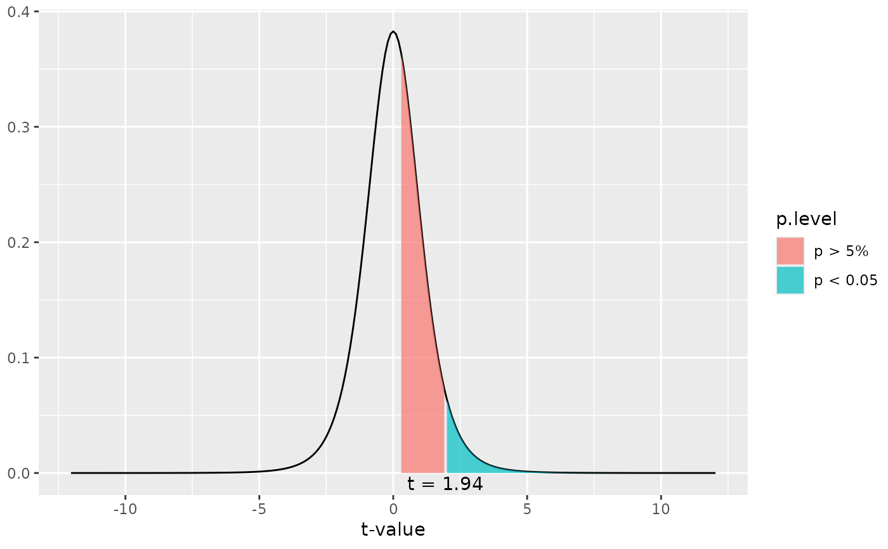
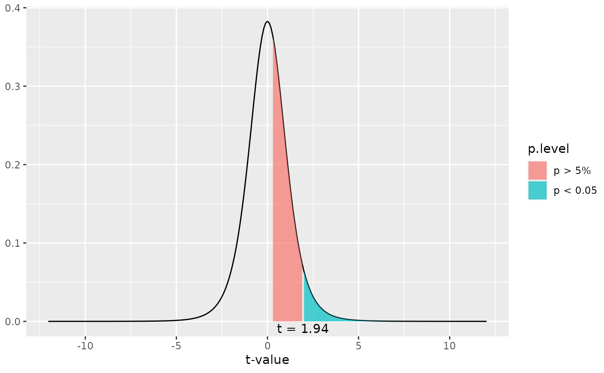

This function plots a simple t-distribution or a t-distribution with shaded areas that indicate at which t-value a significant p-level is reached.
Arguments
- t
Numeric, optional. If specified, a t-distribution with
deg.fdegrees of freedom is plotted and a shaded area attvalue position is plotted that indicates whether or not the specified value is significant or not. If bothtandpare not specified, a distribution without shaded area is plotted.- deg.f
Numeric. The degrees of freedom for the t-distribution. Needs to be specified.
- p
Numeric, optional. If specified, a t-distribution with
deg.fdegrees of freedom is plotted and a shaded area at the position where the specified p-level starts is plotted. If bothtandpare not specified, a distribution without shaded area is plotted.- xmax
Numeric, optional. Specifies the maximum x-axis-value. If not specified, the x-axis ranges to a value where a p-level of 0.00001 is reached.
- geom.colors
user defined color for geoms. See 'Details' in
plot_grpfrq.- geom.alpha
Specifies the alpha-level of the shaded area. Default is 0.7, range between 0 to 1.
Examples
# a simple t-distribution
# for 6 degrees of freedom
dist_t(deg.f = 6)

# a t-distribution for 6 degrees of freedom,
# and a shaded area starting at t-value of one.
# With a df of 6, a t-value of 1.94 would be "significant".
dist_t(t = 1, deg.f = 6)
 # a t-distribution for 6 degrees of freedom,
# and a shaded area starting at p-level of 0.4
# (t-value of about 0.26).
dist_t(p = 0.4, deg.f = 6)

# a t-distribution for 6 degrees of freedom,
# and a shaded area starting at p-level of 0.4
# (t-value of about 0.26).
dist_t(p = 0.4, deg.f = 6)
